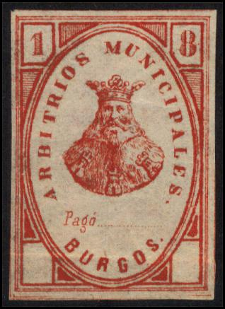

Return To Catalogue - Spain - Spain telegraph stamps - Spain fiscal stamps, part 1
Note: on my website many of the
pictures can not be seen! They are of course present in the
catalogue;
contact me if you want to purchase it.
A huge number of fiscal stamps was issued in Spain. I'll only list the stamps that I have seen myself here. Any additional scans are always welcome!
Other fiscal stamps:
10 c blue (1883) 10 c violet (1884) 10 c green (1885) 10 c blue (1886)


10 c brown (1887) 10 c blue (1888) 10 c green (1889) 10 c violet (1890) 10 c red (1891) 10 c grey (1892) 10 c blue (1893) 10 c orange (1894) 10 c lilac (1895) 10 c green (1896) 10 c red (1897) 10 c blue (1898) 10 c green (1899) 5 c black (1900) 10 c red (1900) 5 c black (1901) 10 c lilac (1901) 10 c blue (1902) 10 c orange (1903) 10 c red-brown (1906) 10 c brown (1908)


('PAGOS AL ESTADO')

'CABILDO DE ESCRIBANOS DEL NUMERO DE MADRID'
Fiscal stamp in a similar design as the 1889 postage stamps
(babyface), but with inscription 'POLVORA Y EXPLVOS' instead

5 c green and yellow 5 c green and red 5 c red and grey 5 c red and lilac
This fiscal stamp of Madrid looks like a german stamp of 1875, it was issued in 1880 (a similar stamp in red, 25 c, was issued in 1879).


Inscription 'AYUNTAMIENTO DE MADRID'; 75 c orange and green
Inscription "ANUNCIOS AYUNTAMIENTO DE MADRID"
1876(?) "IMPUESTO MUNICIPAL AYUNTAMIENTO DE MADRID"
Many more fiscal stamps were issued in Madrid.

'ARBITRIOS MUNICIPALES BURGOS' ; no value indicated, issued in
1877, also existed with surcharge '1 pta' and in the following
values: 1 p green (1878) and 10 c blue (1892).

Inscription 'ANUNCIOS', tower in center, issued in 1877: 5 c
blue, 10 c red, 20 c green, 25 c black, 40 c red and 50 c violet.
In 1883 a slightly modified design was issued: 5 c, 10 c, 20 c,
25 c, 40 c and 50 c (all in colour blue).
Another 'ANUNCIOS AYUMIENTO DE CARTAGENA' design exist (much larger): 5 c black, 10 c black on yellow, 20 c black on green, 25 c black on red. There are even four types of these stamps (Peseta and Pta different sizes).
I don't know what the following stamps were used for, they have inscription 'SOCIEDAD DEL TIMBRE' and a city name.

In the above design exists a black stamp with 'SOCIEDAD' on top and 'DEL TIMBRE' below. Furthermore many stamps exist with 'SOCIEDED DEL TIMBRE' on top and a city name below. The following city names exist: Alava, Albacete, Alicante, Almeria, Avila, Badajoz, Baleares, Barcelona, Burgos, Caceres, Cadiz, Canarias, Castellon, Ciudad-Real, Cordoba, Coruna, Cuenca, Gerona, Granada, Guadalajara, Guspozcoa, Huelva, Huesca, Jaen, Leon, Lerida, Logrono, Lugo, Madrid, Malaga, Murcia, Navarra, Orense, Oviedo, Palencia, Pontevedra, Salamanca, Santander, Segovia, Sevilla, Soria, Tarragona, Terual, Toledo, Valencia, Valladolid, Vizcaya, Zomora and Zaragoza.

A similar stamp is shown above 'SOCIEDAD DEL TIMBRE' with two women and a shield. These stamps were issued in blue ('Clase' 1 to 23). They also exist in green ('Clase' 1 to 11) and red ('Clase 1 to 23) and with many overprints such as 'HABILITADO PARA PAPEL SELLADO' or 'POUR POLICES D'OUTREMER'.
Non issued stamps with the design of Amadeo I:


Returned letter label of 1875:
This stamp is black on blue and has inscription 'CORREOS DEVOLUCION DE CORRESPONDENCIA SOBRANTE' in a circle. The center has the arms of Spain.
Stamps - Briefmarken - Timbres-Poste - Postzegels - Francobolli - Estampillas

{kind=link}
{kind=link}
{kind=link}
{kind=link}